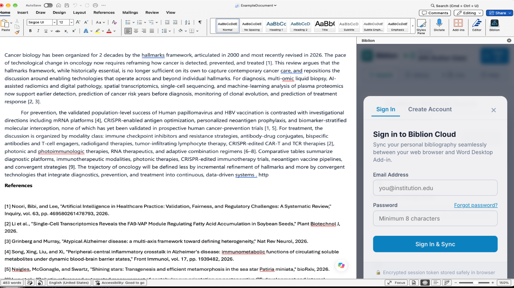
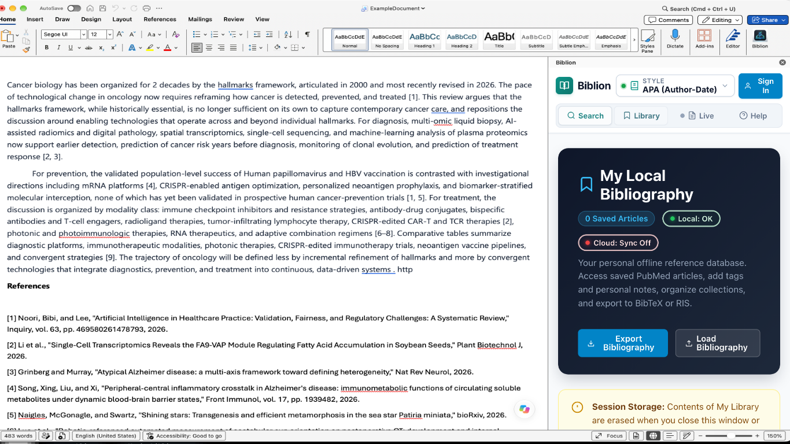

#Biblion Rails API Architecture & Integration Guide
Audience: Backend Engineers & API Integrators
Maintained by: Biblion Evangelist
#1. Overview & Stack
biblion-api is a headless Ruby on Rails 8 API backend powering client authentication, cloud bibliography synchronization, and billing operations.
- Framework: Rails 8 (API-only mode)
- Database: PostgreSQL (
bibliondatabase) - Authentication: Bearer Token / Session tokens
- Payment Gateway: Lemon Squeezy (Subscriptions & Webhooks)
- Environment & Secrets: Loaded via
dotenv-railslocally from.env, production reads/etc/biblion-api.env(symlinked as/var/www/biblion-api/shared/.env)
#2. Core Subsystems
#2.1 Authentication & Account Lifecycle
- Endpoints handle user registration, password authentication, session issuance, and password resets.
- Tokens are passed as
Authorization: Bearer <token>in API requests. - Complies with data erasure requirements upon account deletion.

#2.2 Bibliography Synchronization
- Manages cloud persistence for citations, collections, and custom metadata.
- Handles conflict resolution between client IndexedDB records and PostgreSQL server records using timestamped revisions (
updated_at/ version vectors).

#2.3 Lemon Squeezy Subscriptions & Webhooks
- Inbound webhook handler:
POST /webhook(bound tobiosystechnologies.com/webhook). - Verifies signature using
LEMONSQUEEZY_WEBHOOK_SECRET. - Core lifecycle events handled:
subscription_created: Provision tier and billing cycle.subscription_updated: Update plan, status, or renewal dates.subscription_cancelled: Mark scheduled cancellation (access maintained through grace period).subscription_resumed: Re-activate active status.subscription_expired: Revoke access, trigger data retention/purging job.
#2.4 Background Jobs
PurgeExpiredDataJob: Periodically purges unrenewed expired account data according to retention policies.